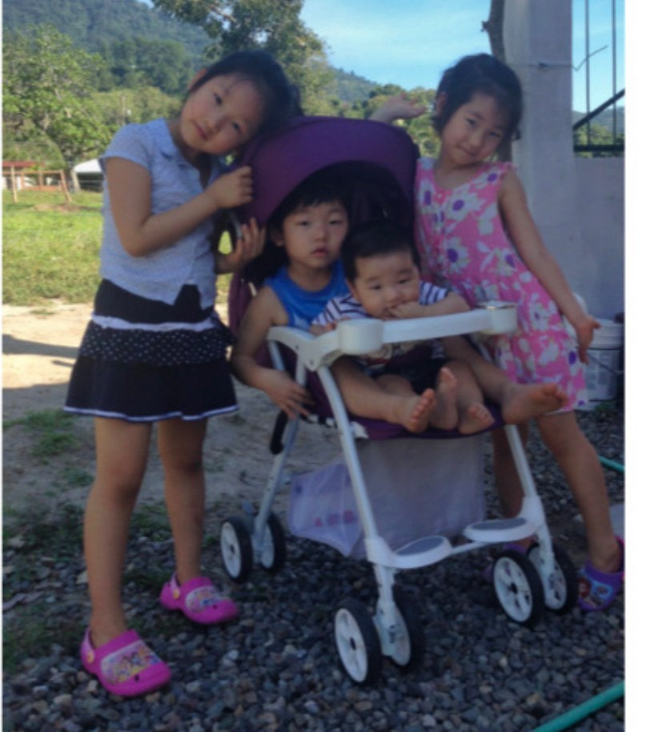
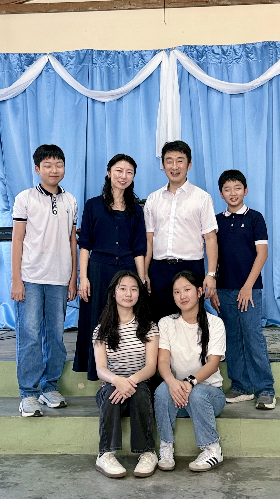
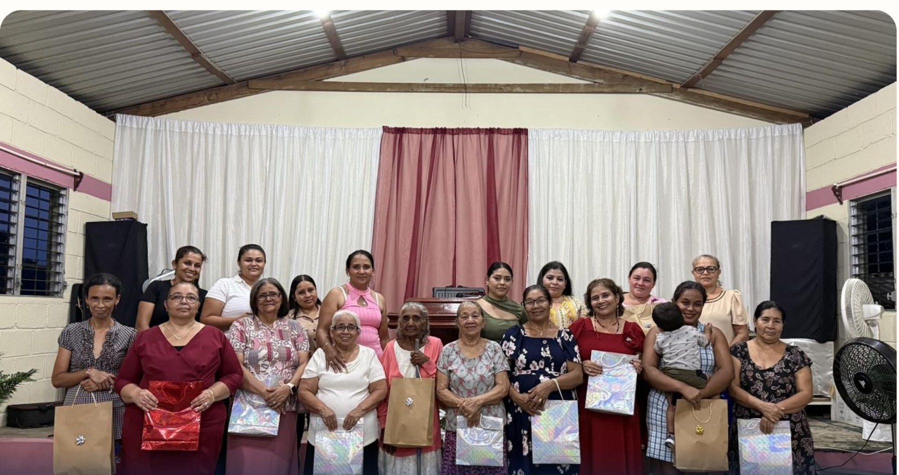
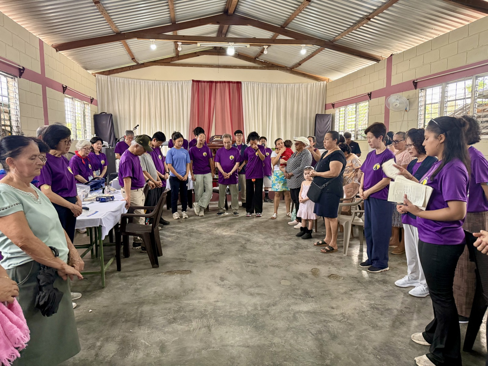

한 아이에서
온두라스까지
"보라 내가 새 일을 행하리니 이제 나타낼 것이라 …
내가 광야에 길을 사막에 강을 내리니" — 이사야 43:19
 화이트보드에 말씀을 적는 Zapotal의 아이 — 마태복음 4:4
화이트보드에 말씀을 적는 Zapotal의 아이 — 마태복음 4:4
계획 요약
8년 자비량을 마친 전임 사역 전환(6월), SEED 국제선교회 합류(8월), Zapotal 최종 도면 완성(7월). 세 전환이 한 해에 모였습니다. 이 계획서는 그 출발점에서 그리는 10년의 지도입니다.
현장 사역
Zapotal 개척
함께 사역
온두라스 — 젊은 소망의 땅
Zapotal — 마당에서 예배드리는 아이들
2020년 8월, 팬데믹으로 교회들이 문을 닫았던 시기에 선교사 가정의 마당을 개방해 이웃과 드린 예배가 더좋은교회(Iglesia de Mejor Pacto)의 시작이었습니다. 그 마당 예배가 자라 교회가 되었고 부지를 매입하고 도면까지 완성했지만, 개척 6년차인 지금도 아이들은 선교사 가정 마당에서 예배드리고 있습니다.
Zapotal의 아이들은 밝고 희망에 차 있으나, 폭력과 범죄의 위험에 무방비로 노출되어 있습니다.
유치원에서 대학 강단까지 — 이 이력이 새 공간(교실 3실)을 실제 운영으로 채울 수 있다는 근거입니다. 여기에 두 교회 사역 기반과 2026년 7월 25명 규모 단기선교팀을 수용한 현장 역량이 더해집니다.
걸어온 길 — 자비량 10년, 그리고 전임의 자리

2016 — 유모차와 함께 도착한 네 아이
2026 — 저마다의 자리에서 함께 사역하는 여섯 식구열매의 증거 — 2026년 상반기
주일학교 어머니들이 처음 교회 문을 넘어, 복음 안에서 참된 안식을 누렸습니다.
한글·스페인어 교재 자체 제작, 12주 24회. "못 한다"던 아이들이 화이트보드에 직접 말씀을 적습니다.
1년 넘게 걷지 못하던 성도가 단기팀의 기도 후 3주 만에 스스로 걸어 나와 간증했습니다.
한복을 입고 아리랑을 부르고, 배운 한글로 성경 말씀을 쓴 1년의 매듭이었습니다.

어머니의 날 전도주일 — Las Brisas
7월 1일, 10년 만의 단기선교팀 개회예배한 아이에서 온두라스까지
우리의 비전은 빈 땅 위에 건물을 세우는 것을 넘어,
아이들의 마음속에 무너지지 않을 믿음의 집을 세우는 것입니다.
Center
빈 땅 위에, 무너지지 않을 믿음의 집을
2020년 마당 예배로 시작된 더좋은교회의 아이들은 6년째 선교사 가정 마당에서 예배드리고 있습니다. 2024년 부지를 매입하고 2026년 7월 최종 도면을 완성했습니다. 이제 시공만 남았습니다.
(기확보 $30K)


건축 로드맵 — 절반은 이미 걸었습니다
계약 등 주요 결정은 김우진 선교사 귀국(2026. 8. 31) 후 진행하며, 시공 감리와 재정 집행 내역은 정기 보고에 포함합니다.
세 걸음 — 짓다 · 기르다 · 맡기다
짓다
10년 계획의 모태 — Zapotal 예배당과 방과후학교를 세웁니다.
- 착공 2026. 11 · 완공 2027. 6
- 방과후학교 개원(2028, 정원 50명)
- UNAH 정식 교양과목 추진(2027)
- 김우진 신학 과정 시작
기르다
완성된 공간을 사람으로 채웁니다.
- 어린이–청소년–청년 신앙 성장 트랙
- 현지 교사·사역자 양성
- 단기선교팀 수용 허브화
- 한국문화학교 확장
맡기다
현지 지도자에게 사역을 이양합니다.
- 예배·교육·행정 단계 이양
- 재정 자립 구조 확립
- Zapotal 모델 확산 검토
- 2036. 2 파송 20주년 — 자립 선교 모델 완성
세 걸음을 떠받치는 여섯 개의 기둥
팀으로 사역하고, 투명하게 보고합니다
1990년 북미주 설립 · 40여 개 선교지 · 선교사 200여 명. 본부와 선임 선교사의 멘토링 구조 안에서 사역하며, 2026 ICMS 훈련을 수료했습니다(10월 정회원 예정).
- 사역 가치 — 예수님의 성품 · 기도 사역 · 개인적 제자양육 · 팀 사역과 협력
- 후원 교회를 관람자가 아닌 동역의 주체로
- 사역비 · 생활비 · 건축비 계정 분리 기록, 영수증 보관
- 건축 헌금은 건축 목적 외 전용 금지
- 반기 보고서에 재정 집행 내역 포함 · 요청 시 세부 내역 제출
- 월간 — 기도편지(MFH #YYMM): 온두라스 소식 · 사역 · 가정 · 기도제목
- 반기 — 사역 보고서: 성과 · 재정 집행 · 다음 계획
- 상시 — MFH 앱(mfh-snowy.vercel.app): 사역 일지 · 프로젝트 진행 · 지난 편지 전체 공개
- 요청 시 — 후원 교회 대상 화상 · 방문 보고
네 자녀와 함께 온 가족이 사역합니다. 2026년 7월 단기선교 현장에서는 자녀들이 통역·가족사진·시력검사 보조로 각자의 자리에 섰습니다. 매주 토요일 가정예배로 믿음의 공동체 됨을 지켜갑니다.
이 길을 함께 걸어 주십시오
건축의 전 과정이 안전하고 순조롭게 진행되도록, 그리고 그 공간에서 자랄 다음 세대를 위해 기도해 주십시오. 매월 기도편지로 구체적인 제목을 나눕니다.
벽돌 한 장, 책상 하나가 아이들의 미래를 세우는 밑거름이 됩니다. 건축 헌금(일시)과 사역 후원(정기)의 두 방식이 있습니다.
이 비전을 주변 교회와 성도들에게 알려 주십시오. 단기선교팀 파송도 소문의 동역입니다 — 팀이 다녀간 자리에 치유와 회복의 열매가 남습니다.